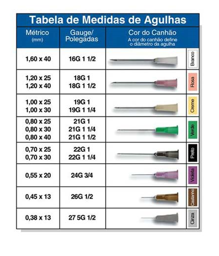

Auto-aplicação de injetáveis
Explicação sobre como reconhecer a agulha ideal e por que usar ela
A aplicação é sempre intramuscular, logo, deve ser usada uma agulha apropriada para uso intramuscular.
As agulhas são separadas por cor segundo seu calibre, isto é, sua espessura. Note que, portanto, agulhas de diferentes comprimentos mas mesmo calibre tem a mesma cor.
No uso intramuscular é feito um cálculo para decidir qual agulha (dentre as permitidas para uso intramuscular). Esse cálculo envolve qual será o local de aplicação (dentre os locais que são permitidos) e qual o tipo físico da pessoa (se possui pouco ou muito músculo e pouca ou muita gordura).
A princípio, para quase todos os casos, exceto pessoas severamente abaixo do peso ou severamente obesas a agulha ideal é a preta (0,7mm de calibre), de 30mm de comprimento.
Esta agulha é a que tem o menor calibre permitido para uso intramuscular (causa menos dor, portanto facilita a auto-aplicação). E, ao contrário da agulha de 25mm, garante com mais confiaça que o músculo será alcançado e penetrado, mesmo em pessoas com mais gordura no local de aplicação e/ou caso não se esteja usando o método Z-track (que ajuda a profundidade da penetração).
Conclusão: usar a agulha de 30mm x 0,7mm (canhão preto).
P.S.: saiba que a maioria dos atendentes de farmácia não tem esse conhecimento sobre como reconhecer agulhas. o ideal é comprar uma caixa da agulha correta pela internet ou comprar a quantidade desejada por aplicativo, mas se você for comprar pessoalmente na farmácia saiba que você possivelmente terá de reconhecer por conta própria a agulha correta. Sempre procure na embalagem da agulha pelo "30mm x 0,7mm" e observe a cor do canhão dela para garantir que foi escolhida a agulha correta.

A seringa ideal para uma dieta de 0.5ml semanais é a de 1ml (seringa para insulina com agulha removível), isso porque a largura da seringa de insulina ajudará com que você injete o líquido mais lentamente (jamais injete tudo de uma vez em movimento rápido). Em princípio, em intramuscular, a injeção em si (o pressionamento do êmbolo) deve ser feita bem lentamente (0,1ml/s), pra não machucar o tecido.
Dica 1: Horizontalizar o bisel (a ponta da agulha, por onde sai o líquido) invés de lateralizar, basicamente virar o bisel pra cima ou pra baixo.
Dica 2: Fazer a prega ou Z-Track (puxar a pele para o lado enquanto injeta a agulha).
Tutorial para realizar a injeção: https://youtu.be/e0wDPZ0D9Wk
Veja atentamente cada detalhe desse tutorial. Deralhe: a parte em que ela puxa ar pra injetar no vial (e todo método de extração) pode ser ignorada, já que não tá sendo usado um vial, mas sim uma ampola. Outro detalhe é que ela aplica no reto femural, o mais comum é no vasto lateral. É importante prestar atenção em cada detalhe desse vídeo desde o modo como ela prepara e abre tudo antes, a posição das mãos.
Como aspirar a ampola: https://youtu.be/y0OsOhpSPHc